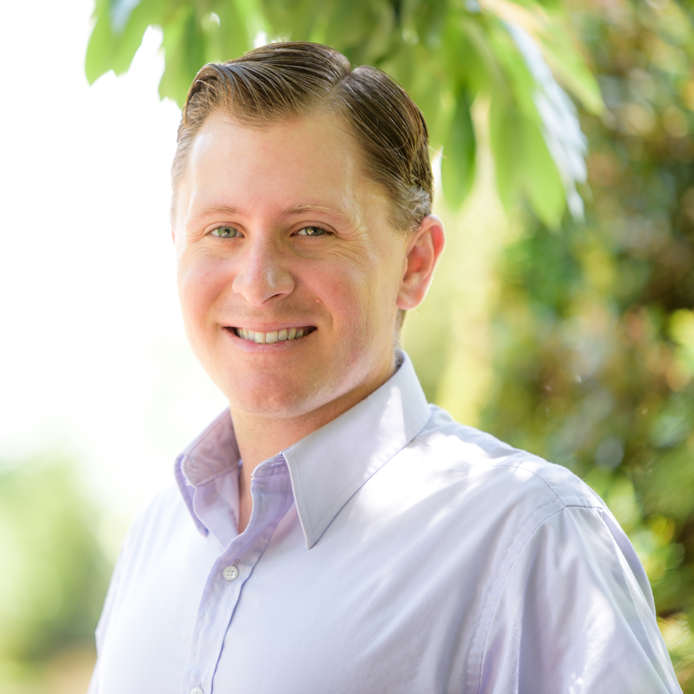

About The Photographer

Kyle Rosenmeyer has been an active photographer for 2 years, focused on creating artisic landscapes and cityscapes for home decoration. Kyle has traveled thousands of miles by car, boat, plane, train, and on foot with a camera, from central Alberta to central Florida. As Kyle's portofio as grown, so has the complexity and quality of the photo projects he takes on. Kyle received a formal education from Boise State University in Civil Engineering, and has gone on to work on infrastructure projects in Idaho and Florida, ranging from transportation to land development and municpal planning. Kyle shoots on Nikon cameras, primarly Tamron lenses, and Vanguard Tripods. His go-to equipment is a Nikon D750, Tamron 70-200mm G2, and Tamron 15-30mm SP. Kyle sells his artwork on his website, www.scapesgallery.com, and through the ecommerce storefronts Etsy and Fine Art America.